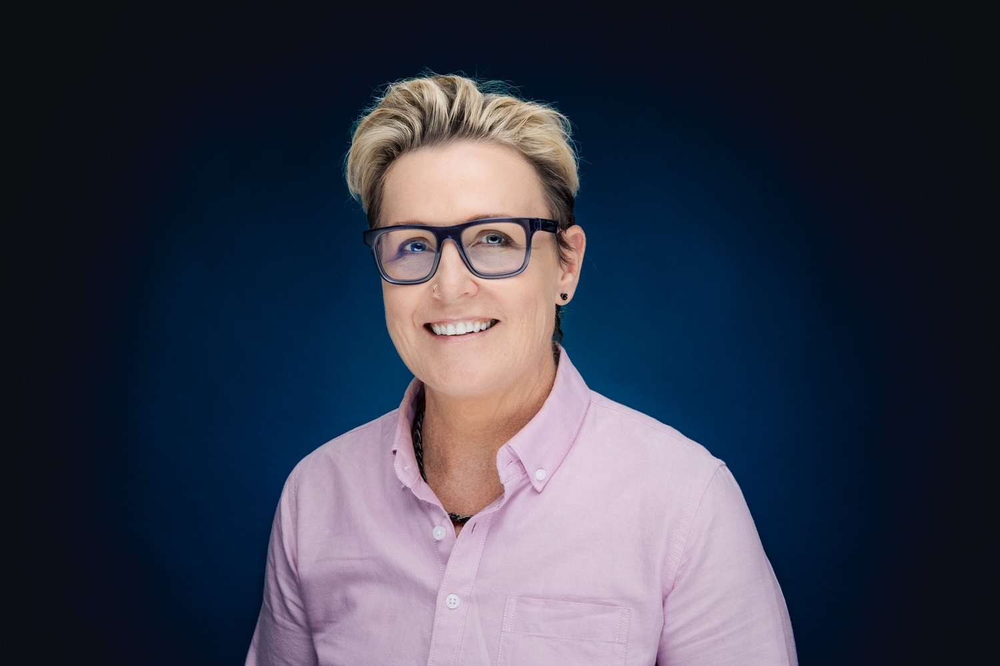

I think like a strategist and design for the UX. Senior content designer, UX writer, and content strategist available for full-time, contract, and freelance work. I do my best work in complex industries where clarity actually matters.

I design content that drives product value by solving real user problems.
With over a decade of experience across financial services, insurance, healthcare, and enterprise software, I blend content strategy and user research to create digital experiences that actually make sense to the people using them. I do my best work in complex environments: the kind where the terminology is jargon, the product is technical, and getting clarity wrong has real consequences.
I've worked as the sole content designer in large organisations, built content practice foundations from scratch, and collaborated within cross-functional design teams. I'm equally comfortable shaping a design system's voice guidelines as I am writing a single piece of microcopy that makes a confusing moment suddenly make sense. (Those small wins are my favourite.)
My background in instructional design and technical writing means I bring a rare combination: I understand how people learn, how systems work, and how to write for both. If you need someone who can hold the big picture and sweat the small stuff, that's me.
As Teachers Health's first content designer, I joined during a period of significant digital platform transformation. Members were contacting support for tasks they should have been able to complete themselves. The existing help content was ~30 fragmented FAQ pages buried across the site, written in internal jargon that didn't match how members talked about their own cover.
There was no content design practice, no style guide, no IA strategy, and no dedicated App and Online Help section. A full website IA overhaul would take months. Members needed help now.
I started with research before touching any design. I audited the existing FAQ knowledge base, analysed member complaint themes and call-driver data mapped to each task area, and conducted competitor analysis of top-rated help hubs including nib, Bupa, Uber and Zoom, documenting what made each effective.
A key insight from the research: members used at least 8 different names for the Online Member Services portal ("website", "portal", "online account", "web"). Internal jargon like "OMS" was meaningless to them. This directly shaped every content decision that followed.
I also used engagement analytics across both web and app to identify the top tasks members were actually trying to complete, making sure the six guides I built were grounded in real behaviour, not assumptions.
Rather than waiting for a full website overhaul, I proposed and wrote a four-phase content strategy to deliver a quick win first: a new landing page and six task-based how-to guides, accessible from the mega menu.
The core IA principles I defined: member-first task-oriented navigation, clarity over brand terms, low cognitive load, accessibility, and no duplicated destinations.
I mapped the ~30 existing FAQ pages to six consolidated guide topics based on the most common member tasks, reducing fragmentation and improving findability in one move.
I designed the landing page and guide structure directly in Figma, exploring two design directions before committing to the MVP approach. Design decisions were captured with rationale, including the decision to combine app and OMS guides rather than separate them, and to use member language throughout rather than product names.
All content went through stakeholder and legal reviews before going live.
Separately from the how-to guides project, I established content design foundations the organisation had never had, centred on a digital writing guide covering writing guidelines, plain language principles, terminology and glossary, and capitalisation standards specific to the digital member experience. I also created a content RACI to clarify ownership between the digital MX team and marketing/comms, and a ways of working document for the content review and publication process.
UniSuper was moving from a phone-based claims initiation process to a digital-first experience. The goal: make it easier for members to start a claim without needing to call, reducing reliance on phone support and improving accessibility at one of the most stressful moments in a member's journey.
The challenge was deeply human. Members filing insurance claims are often dealing with illness, injury, or loss. The content needed to be clear, warm and professional, without feeling clinical or overwhelming.
I started by building the content strategy: mapping terminology, defining tone, and creating storyframes before any wireframes were drawn. I listened to live member call recordings to understand real language and pain points, ran content workshops, and audited existing customer-facing content.
I designed content directly in Figma, iterating closely with the UX team and an in-house researcher. I provided a detailed brief for user research sessions and attended interviews, ensuring insights directly shaped content decisions throughout the journey.
Participants ranged from people who struggled with non-digitised forms to those who felt made to feel incompetent due to low insurance literacy. One participant summed up the tone challenge perfectly:
"When I'm talking to my super fund, I don't want a best mate. I want you to be professional about it."
Across Atlassian's product suite, "Learn more" links were inaccessible for users relying on screen readers. A screen reader reads "Learn more, Learn more, Learn more" with no context about where each link leads. Users with visual impairments couldn't navigate meaningfully. This was a product-wide problem with no existing standard and, honestly, no one had formally tackled it yet.
I researched WCAG accessibility guidelines and audited the current state across Atlassian products. I created a DACI decision-making framework in Confluence to identify who needed to be involved, circulated it across teams, gathered feedback, and built a content-wide initiative to resolve the issue systematically rather than just patching it in Bitbucket.
The solution was descriptive, contextual link text replacing "Learn more" was tested, refined, and embedded into the Atlassian Design System as the permanent standard for all future product development.
This is the kind of work that separates a content designer from a content writer. Not just fixing the copy in front of you, but identifying the systemic problem, building the consensus to solve it properly, and making the fix stick.
NorthOnline is AMP's adviser-facing investment platform. The site had been built without a UX writer. Content was squeezed into design templates, key tasks were buried, and a previous uplift had produced low traffic and poor findability.
I led UX research using Askable and Optimal Workshop, conducting interviews and tree testing to understand how advisers navigated the site and where they failed. Research findings informed a full content strategy. A copywriter wrote initial copy which I then UX rewrote throughout, aligning tone, fitting content to designs, and restructuring to match the taxonomy. I also contributed to SEO keyword optimisation across the site.
The AMP broker website, a 45-page B2B site, needed a full content overhaul. Working within a compact UX team, I handled the end-to-end content design and UX writing: redesigning the information architecture, rewriting for clarity and scannability, co-designing new Figma templates, and running content strategy workshops with stakeholders.
This project was craft-led. I owned the UX writing and content design throughout, using data analytics to validate decisions including merging underperforming pages.
"I worked with Christine for several years, and was always impressed with her customer centricity and ability to explain complex technical details in plain language. Christine is a great stakeholder manager, understands the balance between business requirements and customer experience, and is a self starter in terms of prioritising her work load. I wouldn't hesitate to work with Christine again."
"She is one of the most insightful UX Writers I have worked with. She specialises in customer-centric content for digital applications and has exceptional experience crafting engaging, clear, concise copy that not only resonates with target audience but also drives the message across. Her deep understanding of User Experience and customer-first mindset always led to best outcomes."
"Christine's impact was monumental and showed through in the feedback of our customers. Her work directly reduced the amount of support and frequency of questions from our customers, ultimately leading to customers launching features faster."
"Christine took the time to understand the audience, their desires, pain points and thought process, and designed a purposeful web experience. Absolutely loved working with Christine!"
"Her talent for simplifying complex technical solutions is outstanding. Christine would be an asset to any technical environment. Her story-framing talent not only clarifies the outcome for the end user but also supports the internal team's understanding of complex products across an organisation."
"My comments and changes in the Figma are so considered and thoughtful. I really admire your approach, especially around considering the broader context of where it all sits and the documentation for future applications. We're very lucky to have you here!"
I'm available for senior content design, UX writing, content strategy, and service or UX design work. Full-time, contract, or freelance. Hybrid or remote. Based in Sydney. Happy to talk through case studies, share work samples, or just have a good conversation about the problem you're trying to solve.